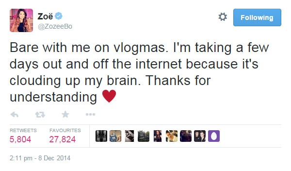

Zoella: Girl Offline
Published: 9th December, 2014
Zoe Sugg (known as Zoella on YouTube) has been the talk of town or in most cases the Internet for the past few days as she went offline after it was confirmed her bestselling debut novel was actually ghostwritten.
Zoella’s debut book titled Girl Online was released on 25th November 2014 and since then has sold nearly 80,000 copies but this week the publishers of her novel (Penguin) confirmed that Zoella did not write the book Girl Online on her own.

For those that may not be familiar with the term ghostwriter; it is a writer who writes a book or other texts for another person. That other person will get the credit for the work.
Since the news of her debut novel being ghostwritten, Zoella has received a huge amount of backlash from the press, media and public that has exploded onto the Internet. Zoella decided to quit the Internet and take a break from Vlogging (Video Blog) as ‘it’s clouding up my brain’.

But my question to you is, what is the issue here and why are we giving her some much hate?
Firstly I would like to state that I have not read Girl Online (it is on my Christmas list though) but I have watched plenty of videos that Zoe has uploaded onto YouTube.
I believe that the backlash that has been directed at Zoella is down to jealously, which let’s face it is the main reason why people hate on others. Zoe Sugg has had a successful few years since she set up her blog and YouTube channel back in 2009. With her success and beauty it is only natural that we are slightly jealous of the 24 year old Vlogger.
However, does it really matter that her book is ghostwritten. I don’t think it does. With the amount of copies sold and the amount of people reading the book is surely that is a good thing. Should we not be glad that people are reading?
In addition to this, many books that are out on sale have been ghostwritten, it’s not just Zoe Sugg’s book. Indeed the concept is wrong (although not illegal) it happens everywhere. For example books, movies and singing competitions.
I personally think that maybe Zoe could have handled things a little better and explained herself to her fans but then again why should she explain her actions to anyone.
Everyone is allowed to take a break. That includes Vloggers. They film their day to day lives, share personal information about them to us and let us into their life for our entertainment. Surely the least we can do is respect their decisions and give them a little breathing space from time to time.
My final words are to respect people’s decisions in life whether you agree with them or not. They are only human and have feelings just like us!
What are your thoughts on Zoella and her book being ghostwritten? Let me know in the comments below.
Zoe Sugg is an English fashion and beauty vlogger, YouTuber, and author. She is best known by her YouTube username Zoella.